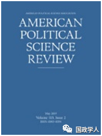
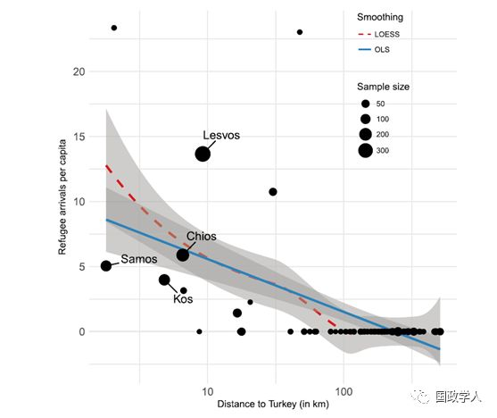

收录于合集

简 介
** 【作者】** Dominik Hangartner：苏黎世联邦理工学院比较政治和国际研究中心副教授；Elias Dinas：欧洲大学学院政治和社会科学学部瑞士讲习教授；Moritz Marbach:苏黎世联邦理工学院比较政治和国际研究中心博士后；Konstantinos Matakos：伦敦国王学院政治经济学部助理教授；Dimitrios Xefteris：塞浦路斯大学经济学部助理教授
** **【 编译 】****王俞欢
** **【 校对 】****兰星辰、姚寰宇
** **【 审核 】****王国欣
** **【 来源 】****HANGARTNER, D., DINAS, E., MARBACH, M., MATAKOS,K., & XEFTERIS, D. (2019). Does Exposure to the Refugee Crisis MakeNatives More Hostile? American PoliticalScience Review, 113(2), 442-455
** 【期刊】** 《美国政治科学评论》是政治学的学术研究期刊，提供同行评审的文章和整个学科的子领域的论文。涉及的领域包括政治理论，美国政治，公共政策，公共行政，比较政治和国际关系，5年平均影响因子为6.224。

暴露于难民危机之中会让当地人更有敌意吗？
Does Exposure to the Refugee Crisis Make Natives More Hostile？
Dominik Hangartner
内容提要
近年来，大量难民涌入欧洲引起了学界的关注，但有关难民危机对当地人的态度、政策偏好和政治参与影响的研究仍然较少。本文将研究对象选取在爱琴海周边地区，包括靠近土耳其海岸的希腊群岛——因为这一地区经历了大量难民的突然涌入。本文的作者们调研了群岛上的2070名居民，同时考虑其所在岛屿与土耳其的距离，发现 直接被暴露在难民危机之下会引发居民对难民、移民和穆斯林的敌意大量而持久地增长 ，同时人们会 通过更积极的政治参与去影响排他性政策 （exclusionary policies）。由于难民们只是途经这些岛屿，作者们的结论挑战了对反移民情绪传统的经济和文化解释。作者研究发现，仅是暴露在难民危机之下，就会使得当地居民对难民的敌意长久地增加。
文章导读
**1
**
** 研究背景 **
近年来，全球范围内被迫流离失所的难民人数高达6600万人次，达到二战以来的最高峰。2015年以来，仅在欧洲就有超过300万人申请庇护——这些人主要来自叙利亚、阿富汗和伊拉克等穆斯林国家。尽管在欧盟和土耳其达成“难民协议”后，2016到2017年的申请人数有所下降，但整体上仍有大量民众寻求去欧洲避难以逃离旷日持久的冲突和迫害。
激增的避难人数、混乱的难民潮管理等新闻占据了欧洲媒体的主要版面，这也激发了社会的紧张情绪，并造成充斥暴力的政治反弹等问题。在许多国家，极右翼政党利用选民的焦虑进行社会动员以制定更加严格的避难政策。难民危机使欧洲极右翼政党受到的关注增加，但是人们对难民如何影响当地居民的态度、政策偏好和政治行为的了解仍然很少。这主要是由两方面原因造成的。首先，为了超越现有的关于投票行为的汇总数据，我们有必要从个人层面上对选举行为进行研究，因此要对受到难民危机不同程度影响的地区分别调查。第二，所有有关难民影响的研究面临一个共同关键问题，即难民流动的方向不是随机出现的，难民会自行选择较适合生存的地区。
这项研究有四个贡献：第一，本文的研究最先为“难民危机对欧洲居民排他性态度、政策偏好和政治参与的影响”等问题提供了因果证据（causalevidence）。第二，本研究没有集中着眼于难民到达当下的影响，或难民危机加剧可能产生的影响，而是更关注长期结果——因为调查是在难民协议达成一年后进行的（这时难民涌入的绝对数量已经变少了）。第三，选取的研究对象为希腊。希腊经历经济动荡和财政紧缩，加上难民危机冲击，这些共同促成了反对移民的情绪（anti- immigrant sentiment）。第四，到达群岛上的难民基本会在24小时内离开去下一站，因此调查难民途经地区的排他情绪是很有意义的。
**2
**
研究过程 ****
在本文中，作者们对希腊所属岛屿的2070位居民进行问卷调查， 考察他们对难民、移民和穆斯林少数族裔的态度，他们关于避难所、移民和社会整合政策的偏好，以及他们在制定有关难民政策时的偏好 。 ****有关态度的问题包括“认为希腊是否应该接纳更多避难者？”，“认为难民子女是否可以在当地接受教育”、“难民对希腊是否是负担”等量表题。有关行为的题包括“你在2015年选举中投票给了哪个政党？”“是否应该告诉代表你的议员你对于难民的态度？”等。 作者选取了受到难民危机影响最大的地方之一——希腊。希腊拥有在欧盟外围的超长海岸线，且临近土耳其海岸，很多地区难以巡逻。这些因素使希腊迅速成为阿富汗和叙利亚难民进入欧洲的主要入口。由于希腊的岛屿与土耳其的距离远近是不同的，作者们利用“距离”作为测量难民到达的工具，这就解决了难民潮强弱不同对当地人态度影响的干扰因素。在希腊难民危机中，寻求避难的人常常会迅速经过爱琴海群岛然后离开，这削弱了传统的接触假设（即难民通过与当地人接触从而影响其态度，减少当地人的偏见）的适用性，因为在希腊，这种接触情况很少发生。相似地，经济和文化关切也不能成为影响当地人态度的主要因素，因为难民们并没有在这些岛上找工作，或者申请社会福利。然而，大量难民的涌入确实干扰了岛上居民的日常生活。许多当地媒体都强调，政府在为难民提供医疗救助、卫生服务和垃圾清理时表现得低效无能。在难民聚集点附近，堆积成山的垃圾和暴露在外的排泄物引发人们对传染病的担忧，大量NGO工作人员与志愿者的介入造成了更混乱的景象，使人们产生国家处于危急状态之感。此外，据媒体报道，难民聚集点预计将成为产生社会威胁程度最高的地方。种种因素表明，“社会威胁”可以解释混乱的难民管理是如何引发当地人对难民和少数族裔产生排斥行为的，即便只是过境国。
以下几个因素推动了本文的研究：首先，与土耳其海岸距离不同导致难民涌入人数的区别，这使作者可以比较不同岛屿上相似的当地居民。其次，地理邻近性和被统一政府机构管辖保证了这些岛屿（无论是否有难民涌入）在很多方面有一样的特征。第三，在有难民涌入的岛屿中，难民们集中于有联合国难民署专员的地区，这使得研究可以将岛屿内部的不同点作为补充测试机制。
作者首先把土耳其海岸到希腊各个岛屿的距离作为测量难民到达的工具变量，这有利于解决与难民选择目的地相关的选择偏差问题，可以使检测集中于解释变量的外生部分（与土耳其海岸的距离），而排除其他事先存在的影响因素——因为 不同岛屿对外来者事先存在的 态度 是不同的 。
在第一阶段回归分析中，作者统计了与土耳其海岸距离不同的希腊岛屿，和每个居民平均接收的难民人数之间的关系。从最小二乘线性回归模型（OLS）中可以看出，两者之间具有较强的线性相关性，而“与土耳其海岸的距离”这一变量具有本身较好的外生性，， 总体上 距离土耳其海岸越近，难民人数总体越多 。（参考图中蓝线）
作者使用两阶段最小二乘回归（2SLS），使得作为自变量的“到达岛屿的人数多少”（即暴露于难民危机中的程度），和作为因变量的“难民对当地人态度、偏好、行为的影响”之间的内生性问题，在加入工具变量后得以解决。为了确定工具变量外生性好坏，作者设置了在安慰剂检验(placebo test)，检测了选举结果、性别、年龄、教育程度等变量和不同距离岛屿难民到达人数的关系，结果都在0左右，距离远近与这些变量无关，证明了工具变量的有效性。

接下来，作者根据研究内容做了实地调研，调研地点包含了希腊所有有居民的岛屿。在分析问卷时，作者采用衡量受访者对待难民态度、政策偏好和参与行为的标准指标，即使用一系列情感温度计(feeling thermometer) ，测量当地居民对不同外来群体的看法。作者利用2SLS分析出了难民到达人数，与当地人看待难民的态度及相应行为之间的关系。数据分析结束后，作者们进行了稳健性（Robustness）检验，考察不同岛屿之间，是否存在除了和土耳其海峡距离差异之外的其他不同点。他们采取了统计难民危机之前的选民投票结果、保留距离土耳其海岸较近（255km以内）的岛屿、用连续变量重新检验工具变量回归结果等方式，最后检验出结果具有稳健性。
作者们最后研究了暴露在难民危机之中的时间和对象，以及产生排他性反应的其他可能机制。首先，那些主要依靠旅游业获得收入的居民是否会对难民潮有更强烈的反应？结果表明， 尽管对难民的态度会受到收入来源的影响，但并没有明显的规律 。其次，难民聚集区附近是否是产生影响最大的地方？答案是肯定的， 靠近难民聚集点的地区居民的敌意上升最多 。第三，反移民情绪是否真的存在“通电效应”（galvanization effects），即事先感受到的威胁是否加深了当地人的反应程度？事实证明， 无论是否预先感受到威胁，居民对难民的负面情绪是基本一致的 。
**3
**
研究结果
经过对问卷的数据统计分析，研究主要得出了如下结果：
研究发现，直接暴露在难民危机之中都使得当地人的排他心理、对避难所和移民政策的态度以及政治参与受到了较大的影响。在直接被暴露于难民危机的居民中，反对避难者和反移民的人数标准指标相比原来增加了25%，反穆斯林的人数标准指标也比原来增加了1/6。与没有直接面对难民潮的居民相比，他们更倾向于反对接收额外的避难者，更支持学校对难民子女的禁令，同时对联合国难民署的捐献也更少——这样的敌意是长期存在的，而从短期来看则体现在他们的投票行为中。
具体来看，结果有以下几个方面：
1、在反对避难者的政策偏好方面，直接暴露于难民危机中的人更倾向于支持学校对难民子女入学的禁令。
2、在反对移民政策偏好方面，直接暴露于难民危机中的人更倾向于支持减少经济移民和加强边境保护。
3、在反穆斯林政策偏好方面，直接暴露于难民危机中的人表现出更强烈地反对议会中出现穆斯林少数族裔的政治代表。
4、在政治行动方面，直接暴露于难民危机中的人更倾向于积极地参与支持严格避难政策的制定。
**4
** ****结 语 ****
这项研究利用在爱琴海的自然实验（natural experiment），考察了难民危机对当地人态度、政策偏好和政治参与的影响。作者发现， 相比没有经历或较少经历难民危机的岛屿居民，经历过大量 且 突如其来难民涌入的居民对庇护避难者、移民和穆斯林 的 政策更加敌视，更倾向于支持和游说更严格的庇护政策，这些发现得到了岛内分析的 进一步 支持 。通过将原来的难民到达人数这一二元变量变成连续变量，运用双对数模型进行估计（log- log），作者发现，对外来移民的敌意会随着难民人数的增多成比例地增长。这些影响具有很大的政治意义。例如，关于政府是否应该减少给予庇护的人数，被暴露于难民危机之中的希腊岛屿居民和未被暴露的居民观点的差异，和非常保守的欧洲公民与非常自由的公民观点差异一样大。
与其他类型的移民不同，难民乘飞机旅行的能力有限，他们通常需要辗转多个国家才能到达目的地。例如，在当前难民危机的背景下，在数百万过境国的公民中可以看到前往西部的阿富汗和叙利亚的难民，经约旦、黎巴嫩和土耳其至希腊，从那里沿着巴尔干经过马其顿，波斯尼亚和克罗地亚，或塞尔维亚和匈牙利到奥地利。沿着这条路线生活的当地人经历了难民的过境，其日常生活受到严重的影响，这与爱琴海群岛的居民非常相似。因此，作者期望希腊的调查结果也适用于其他欧洲国家和几个北非过境国。
本研究有助于加深人们对产生移民情绪的原因的理论理解。 首先，研究表明，在那些难民大量涌入且短暂停留的地方，反移民情绪广泛存在于当地居民之中。第二，由于最后一波过境难民出现于 2016 年3月，而调查是2017年进行的，结果说明难民危机对居民态度的影响并不是短暂的而是持续存在的。 第三，大量避难者的涌入不仅仅引发居民对难民的敌意，而且会影响人们对经济移民者和穆斯林群体的态度（即使是已经在当地生活了几个世纪的穆斯林）。
_ ** _ 本文由国政学人平台编译推荐**
更多阅读
【重磅速递】约瑟夫·奈：美国霸权的兴衰：从威尔逊到特朗普 | 国政学人
【重磅推荐】巴里·布赞：英国学派视角下的中国崛起 | 国政学人
【重磅速递】米尔斯海默：注定失败：自由主义国际秩序的兴衰 | 国政学人
【百年国关】历史在国际社会中的应用：从巴黎和会到现在 | 国政学人
【国际组织】IO杂志：联合国维和行动的武力运用问题研究 | 国政学人
【国际秩序】为什么自由主义国际秩序理念将美国外交政策引入歧途？| 国政学人
【关系理论】“关系”：世界政治关系理论的中国话语 | 国政学人
【英国学派】张勇进：中国与全球国际社会中的自由主义等级制：实力与对规范变迁的协商 | 国政学人
【地区秩序】论经济实力的可转化性：中国经济崛起与东亚安全秩序 | 国政学人
【中俄关系】不得已的伙伴：系统-单元动态与中俄关系 | 国政学人
【IPE研究】美国对外贸易政策的“1934年体制”是如何形成的？| 国政学人
【现实主义】斯蒂芬·沃尔特：傲慢的终结与美国克制的新时代 | 国政学人
【理论批判】系统、层次与结构理论：沃尔兹的理论并非系统理论 | 国政学人
【外交政策】单极体系下的不和平状态与美国外交政策 | 国政学人
【欧洲研究】资本主义多样性与合规：加入欧盟后中东欧的经济改革 | 国政学人
【理论研究】吴建树：权力、道德、均势、联盟与摩根索——汉斯·摩根索的经典现实主义思想再解读
【友谊国关】将友谊重新引入国际关系：从中国到西方的关系本体论
【定量研究】政党实力和经济增长（Party Strength and Economic Growth）| 国政学人
【台湾学者】向骏：美国从“霸权稳定”到“霸凌不稳定” | 国政学人
【理论研究】巴里·布赞等：重思日本：主流国际关系理论的偏见 | 国政学人
【南亚研究】南亚对冲：中印竞争中经济和安全利益的平衡 | 国政学人